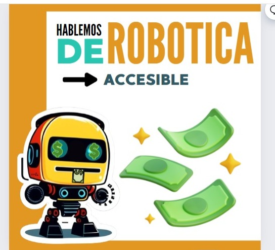

¿Listo para revolucionar tus compras de componentes?
Kitxi es la herramienta que estabas esperando para simplificar tu vida académica y profesional.
Descubre todas las funcionalidades diseñadas para simplificar tus compras de componentes, ahorrando tiempo desde la exploración del catálogo hasta el seguimiento de tus pedidos grupales e individuales.
 ¡Explora las Funciones del Cliente!Descubre la experiencia de usuario única de Kitxi con nuestro carrusel deslizable, que se adapta a tu rol y optimiza tu tiempo de navegación.
Tu acceso directo a la tienda principal de componentes electrónicos con catálogo completo.
Encuentra productos específicos o tiendas especializadas al instante con búsqueda inteligente.
Colabora con otros estudiantes y obtén beneficios en tus compras de materiales escolares.
Organiza tus propias compras conjuntas para proyectos, clases o equipos de trabajo.
Gestiona tu negocio y catálogo de productos si eres vendedor de componentes.
Acepta pedidos cercanos y genera ingresos flexibles como repartidor independiente.
Crea tu cuenta Kitxi. Desde el inicio, podrás explorar productos o, si lo prefieres, unirte a grupos de compra para tus proyectos.
En los grupos, visualiza la lista de materiales del administrador. Puedes ajustar las cantidades y marcar los que ya tienes. ¡El sistema optimiza tu tiempo de gestión!
Cada miembro gestiona su parte. El sistema optimiza la compra grupal, ahorrando tiempo en la coordinación y organización de materiales.
Tu administrador cierra la compra con la tienda. Recibirás notificaciones en tiempo real sobre el estado del pedido hasta que un repartidor verificado lo entregue en el lugar y hora acordados.
Simplifica la búsqueda y adquisición de componentes. Accede a precios competitivos y organiza tus compras en grupo para ahorrar tiempo y esfuerzo. ¡Ideal para proyectos y clases!
Administra tu catálogo de productos, recibe pedidos, y visualiza estadísticas de ventas en un Dashboard intuitivo. Benefíciate del catálogo inteligente global de Kitxi para agilizar tus altas de productos.
Únete a nuestra red de logística. Acepta pedidos cercanos, gestiona tus rutas con un mapa en tiempo real, asegura las entregas con códigos de validación y sigue tus ganancias acumuladas.
Optimiza tu tiempo gracias a los grupos de compra y reduce drásticamente los tiempos de adquisición de tus componentes electrónicos.
Kitxi conecta de forma fluida a compradores, tiendas especializadas y repartidores, creando un ecosistema colaborativo y eficiente en cada transacción.
Fomentamos la economía colaborativa con trazabilidad completa de cada pedido y un sistema que optimiza tu tiempo de gestión.
Ante cualquier eventualidad, como un rechazo de pedido o productos faltantes, garantizamos tu tranquilidad con reembolsos automáticos y soluciones rápidas.
Las tiendas se benefician de una base de datos global de productos, evitando duplicados y acelerando la carga de nuevo inventario de manera eficiente.
Accede a kits de componentes prearmados y curados con la calidad garantizada de Kitxi, o colabora con nosotros para vender tus propios kits y obtener mayor visibilidad.
Kitxi es la herramienta que estabas esperando para simplificar tu vida académica y profesional.